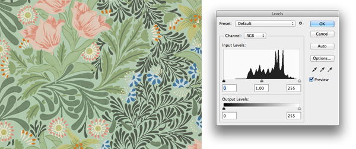

Q4: Friends, fun and food
02013-Q4 Reykjavik, ICELAND: The end of 02013 was a busy and exciting time for us. We didn't accomplish as many of our goals as planned because we were caught-up in exciting new projects through-out the year.
In November, our team attended the 1st Edition of the pop-up Sumendi Restaurant for Restaurant Day. Afterwards, everyone had the gastronomy bug — in a good way. Now we can smell some ideas cookin' for 02014.
|
|
Articles
This is long-form writing, deep thought through articles.
Briefs
We started a new section called Briefs. The idea being these are shorter articles which can be written more freely.
Weeknotes
We are currently in week #156. Weeknotes are brief posts about the weekly progress of the company along with some interesting links and videos.
Happy Birthday!
February 7th, 02011 (optional.is) as a company was formed. It is our 3rd birthday and it's the year of leather, fish leather.
|
|
|
|
Contest Winner
Q4's 24ways Book winner was Vipin from Hyderabad, India. The randomly chosen co-ordinates where Lat: 57.038 Lon: 118.093 over 5400km away.
Remember, You can't win, if you don't enter!
02014 is the year of randomness. This quarter we'll be giving away the book Fooled by Randomness by Nassim Nicholas Taleb.
|
|
More image metadata than you thought

The Cooper-Hewitt, National Design Museum had an interesting problem: how to search their collection of images in new and interesting ways. Their labs team came-up with an ingenious solution by using the entropy of an image. They took the color histogram and computed a value for the image complexity. Then you can sort by most complex to least complex. Using this same idea, they were able to create an "interesting" crop of any image with the most entropy.
They labs team have done more interesting work searching by color promiscuity and other attributes. If you are processing images and looking for new ways to browse, you should read the Cooper-Hewitt Labs blog.
They even have an official Cooper-Hewitt GitHub account if you are interested in looking under-the-hood to see how it all works.
|
|
|
|
|